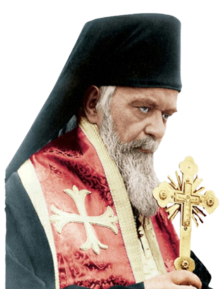
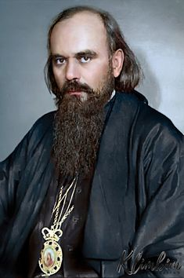

- Sveti vladika Nikolaj Žički(Velimirović) - srpski Zlatoust
Čovečanstvo je jedna gorda reč, draga braćo, no posmatrano s planine čovečanstvo se ne vidi. Vidi se magla i vide se oblaci, no čovečanstvo se ne vidi. Vide se crne gomile šuma i nepravilno izatkana mreža polja i njiva, no čovečanstvo se ne vidi. Naziru se kroz maglu i veliki gradovi kao lokve prosute sive boje, i naziru se reke i putovi kao izvijugani beli konci, no čovečanstvo se ne nazire. Ne vide se carske palate, ni parlamenti, ni hramovi, niti se vide muve, koje preletaju te predmete ljudske gordosti, niti se vide vrapci koji lete nad muvama, ni orlovi koji lete nad vrapcima - samo se vidi gore malo plave boje, što ljudi zovu nebo i dole malo sive boje, što ljudi zovu zemlja, i između toga dvoga nešto, što ljudi ne zovu nikako. Posmatraču na planini najzad se zamore pogledi tražeći u dolini pod sobom čovečanstvo, i on sklapa svoje oči, razvlači usta na jedan ciničan osmejak i šapće sam sebi: čovečanstvo je samo jedna gorda reč ! I zatvorenih očiju počinje da sluša, ne bi li bar čuo to čovečanstvo.
Čovečanstvo je jedna gorda reč, draga braćo, no slušano s planine čovečanstvo se ne čuje . Vetar se čuje i čuje se šuma, no čovečanstvo se ne čuje. Čovečanstvo u dolini pir piruje, no od toga pira ni glas ne dopire do planine; čovečanstvo u dol ini plače i rida, no njegov plač i njegovo ridanje ne ide u visinu dalje od vrabaca; čovečanstvo u dolini vodi ratove, no larma njegovih ratova ne dopire ni dokle orlovi dopiru; čovečanstvo u dolini ženi se i udaje se, uz lupu zvona i prangija, i priređuje šumne ovacije svojim herojima i šumne demonstracije svojim tiranima, no glasovi od svega toga pre se umore i umru no što stignu na planinu. I slušač, koji na planini drži uvo prislonjeno uza zemlju, ne bi li što čuo od čovečanstva iz doline, najzad se uspravlja i glasno govori sam sebi: uzalud ja gledam u jedan pust grob i očekujem iz njega glas: čovečanstvo je jedna gorda reč i ništa više. Nečuveno i neviđeno sa visine čovečanstvo živi i umire u dubodolinama života, i podjednako se ne čuje i ne vidi ni kad je živo ni kad je mrtvo.
Pa ipak, braćo, u tom čovečanstvu, koje se ne vidi s planine samo zato, što ga oči naše ne mogu da vide, i ne čuje samo zato, što ga uši ne mogu da čuju, u tom čovečanstvu odigravaju se drame, koje ni na kojoj visini prostora ni daljini vreme n a ne mogu ostati neopažene za onoga, koji vidi s planine kao i iz doline, i čuje iz daleka kao i izbliza, t.j. za onoga, radi koga se i odigravaju sve te drame u čovečanstvu, - za Boga.
U čovečanstvu se odigravaju mnogobrojne sitne i kru pn e drame, koje muve i vrapci i orlovi ne opažaju, no koje se zato ne manje odigravaju. Sve te sitne i krupne drame u čovečanstvu sačinjavaju jednu veliku, jednu strojnu, genijalnu, jednu jedinu dramu, koju, istina, oblaci i magla i šuma i planina ne mogu da vide, no koja za to ne manje oostoji i ništa od svoje veličine ne gubi, jer je vidi onaj koji treba da je vidi.
Tako je i neobična drama Jovana Krstitelja, koja se odigrala na današnji dan pre mnogo vekova i koju mi i danas spominjemo, ostala neviđena i nečuvena za čobane, koji su onoga dana sedeli na brdu jeleonskom nad Jerusalimom i, ležeći potrbuške, trudili se da vide i čuju u njemu ono što se zove čovečanstvo.
Jerusalim je živeo toga dana kao i obično svojim lenim orijentalskim životom. Po ulicama su sedeli mnogobrojni prosjaci, koji su prosili milostinju u ime staroga Boga Izrailjskog , kome uzajmljuje onaj ko njima, prosjacima, deli. Na pijacama su se prepirali Fariseji i Sadukeji o zakonima i p rorocima, i nikad nisu mogli svršiti svoju prepirku. Nji h je mirila samo zajednička mržnja prema rimskim stražama, koje su pored njih krstarile i zveckanjem oružja njihovu larmu nadvišavale. U hramu, u velikom Solomonovom hramu, vladala je grobna tišina, i ako je ko u njemu tada bio prisutan, taj se trudio, da se i sam izgubi u toj tišini, koja je oličavala davnu predavnu prošlost lj udskog roda. Po kućama se pevalo, plakalo, intrigiralo, mislilo, odmaralo i radilo u glavnom sve ono, što se i danas radi po gradskim kućama kakvog vrelog letnjeg dana. Misli staraca odnosile su se na daleku prošlost, na hiljade godina daleku prošlost, oživljujući u njoj Noja i Avrama i ostale praoce i razgovarajući sa njima. Mi sli mladića preletale su hiljade kilometara u prostoru i zaustav lj ale se n a velikom i večnom gradu, na tadašnjo j p restonici sveta, Rimu. Starci su mi s lima svojim pitali prošlost a mladi lj udi pitali su Rim o sudbi svoga naroda. I tako je Jerusalim, ovaj sveti izrailjski grad, bio vezan jednom mre ž om misli ljudskih s krajevima prost ora i s krajevima vremena u onom mo me ntu, kad su se pastiri s jeleonske gore uzalud naprezali da vide one mašine što misle i što sačinjavaju gordu reč - čovečanstvo.
Među ostalim sivim tačkama, koje su se s planine mogle videti, bila je i jedna, za koju se nikad ne bi reklo da je to raskošni i sjajni dvor Irodov, u koji se sticao sav epikurejski svet Jerusalima, koji je u svetom gradu ne svetinje no uživanja tražio. Manja i od jednog malog mravinjaka izgledala je pastirima ova mermerna palata, u kojoj se odigrala drama Jovana Krstitelja i Irodijade, drama koja je i do nas došla, i koja i naša srca uzbuđuje. Zamislite: gorda mermerna palata Irodova, koja se s' planine mogla videti, ma i kao jedna siva tačka, preko koje su pastiri bacali p ogled, iščezla je s lica zemlje; ni kamen na kamenu od nje nije ostao; dok drama ljudska, koja se odigrala u toj palati, i koja se nije videla čak ni sa hiljadu metara visine, živi i danas; živi i danas ta nevidljiva stvar i životom svojim vaskrsava i rekonstruiše u mašti našoj i sjajnu palatu Irodovu iz trave i pepela. Drama ljudska, dakle, važnija je od mermernih palata u kojo j se ona odigrava - čovečanstvo je, draga braćo, važnije od planine, sa koje se ono ne vidi.
Drama Jovana Krstitelja počela je još pre njegovog rođenja. Još pre nego je se Jovan pojavio u život, o njemu je govoreno. I o svima nama se, draga braćo, govori još pre našeg rođenja. Pre nego se mi na svetlost javimo, o nama se misli i govori. Bog misli o nama, anđeli njegovi znaju za nas, roditelji naši savetuju se o nama za vreme dok s mo mi još daleko od svesti i svetlosti. Kroz stotine posrednih i neposrednih veza vezani smo mi i pre rođenja sa celim svetom, koji nas okružava.
Duga je i dirljiva predistorija rođenja Jovanova.
Jedan čovek i jedna žena plakali s u celoga svog veka i molili se Bogu; molili su se Bogu oni celoga veka i suzama svojim dokazivali iskrenost svoje molitve. Oni su želeli, da im Bog da jedno dete, no Bog im ga nije dao. A o suzama i molitvama ovih starih ljudi, koji su trebali da budu njegovi roditelji, Jovan niš t a nije znao, jer se on još nije bio ni začeo.
Jedan čovek i jedna žena bili su kroz dugi niz godina prezreni od sveta i prezreni od samih sebe za to, što nisu dece imali. Pust i besmislen činio im se s toga njihov život, njihov brak besplodan i beskoristan, i sličan smo k vi kraj puta, koja lista i cveta, no ploda ne donosi. Oni su se ljubili, no želeli su da svoju lj ubav pokažu i prema nekom trećem, koga nije bilo, i za to što ga nije bilo, oni su plakali i suzama gorčali i svoju međusobnu ljubav, kao što je i danas među n ama gorčaju svi oni, koji su u braku a bez dece. - A o pu s toti i gorčini života svojih roditelja bez njega Jovan nije ništa znao, jer ga još nije bilo.
Jedan starac i jedna starica iznenadiše se jednoga dana, kad saznadoše, da će dobiti sina. Tako iznenadnoj radosti oni nisu mogli odmah poverovati, jer oboje behu u godinama. I starica se poče kriti od sveta i predavati radosnim i f antastičnim n agađanjima i kombinacijama o svome budućem sinu. Ja držim da ovi f antastični snovi o detetu, koje će se tek roditi, nisu nepoznati ni jednoj ženi, koja je bila majka ili koja se nada to biti.
Kakav li će biti moj sin? Šta li će biti moj sin? Takvo pitanje mogla je sebi zadavati žena, koja je trebala da postane mati velikog proroka. Da li će moj si n biti lepši od mene i od oca svoga? Da li će biti bolji od nas? Da li slavniji? Da li srećniji? Naravno, on mora biti lepši od nas, i bolji i slavniji i srećniji.
Ova večna slatka i sujetna materinska pitanja i odgovore davala je sebi bez sumnje i mati Jova n ova pre nego što je se Jovan i rodio.
Jednoga dana susretoše se dve žene, srodnice, Jelisaveta, buduća majka Jo-vanova, i Marija, budu ć a majka Hristova. Ni Preteča ni Mesija ne behu još rođeni, no oba behu u majkama svojim. I kad se sretoše ove žene i pogledaše licem u lice, na mah se razumeše. Po licu i po telu jedna druge poznadoše one, da ne behu same. Sudba je nevidljivo stala između njih i do š aptala im tajne, koje su one nosile. Velike i čudne učiniše im se te tajne; gle, one male i proste žene behu oruđa Božja, kojima se Bog poslužio da dovede na svet dva neobična čoveka, koji trebahu da budu vezani među sobom vezama tešnjim no što su veze srodničke, u kojima one, majke njihove, stajahu!
Jelisaveta je bila žena jednog sveštenika, Marija žena jednog drvodelje. Obe one bile su skromna porekla i položaja. I ako se o kakvoj veličini kod njih moglo govoriti, to se moglo govoriti jedino o veličini njihove smirenosti pred Bogom i poslušnosti pred dosuđenom im sudbom.
Taj susret dveju smirenih žena desio se u Judeji jednoga dana, kada je sunce stajalo na istoj razdaljini od zemlje, na kojoj i danas stoji. Zemlja je se okretala svaki dan oko sebe, noseći na sebi dva živa zrna praha, koja su se zvala Jelisaveta i Marija; sunce je ova dva živa zrna praha viđalo z ajedno u toku tri meseca, t.j. u vremenu, za koje je Marija gostovala kod Jelisavete. Jednoga dana, kad je Marija bila otputovala od svoje tetke, sunce pogleda na zemlju i vide Jelisavetu s amu, sa novorođenim detetom.
Kako da mu nadenemo ime? pitaše majka. Kako da ga vaspitamo? pitaše otac. Kako da ga sačuvamo od bolesti? pitahu se i majka i otac. I oboje ustajahu i legahu s prijatnom brigom o svome sinu jedincu, i s toplom ljubavlju, koja je tako dugo bila bezpredmetna, i koja je sad najzad stekla svoj dugoželjeni predmet.
Brzo je Jovan rastao, onako brzo, kao što su njegovi roditelji brzo opadali i ve n uli; njegova moć, telesna i duhovna, jačala je u onoj meri, u kojoj je moć njegovih roditelja slabila. I stari sveštenik Zaharija pre je umro sa svojom ženom Jelisavetom no što je čuo glas vapijućeg proroka u pustinji. Njihov Jovan p ostao je pustinjski prorok, - njihov mili jedinac, Jovan! Bolju bi sudbu oni njemu namenili, da su se oni o sudbi pitali! No ni oni ni on nisu se u tome pitali. Jer sudba jednoga čoveka starija je od njega. Niko od nas, draga braćo, nije ni starij i od svoje sudbe, niti vršnjak sa svojom sudbom.
Jovan je trebao da pripremi put Jednome većem od sebe. On je imao da iskrči i poore njivu, da bi s ejač, kad izađe na njivu. mogao samo sejatp. I Jovan je pošao da bez poštede krči i bez umora ore. O n je rano uvideo, da je njega Bog odredio, da služi ne sebi n o drugima, pa se za tu službu drugima i spremao. Duša ljudska bila je njiva, koju je on bio prizvan da krči i ore. I on je proučavao duše lj udi oko sebe i našao, da one nisu bile zdrave. Greh je pomračavao duše ljudi, i one su se krile same od sebe i u skrivenosti svojoj propadale; neznanje i neverovanje bili su teški teret duša lj udskih, kao što je za jednu nežnu biljku jedna stena teški teret, pod kojom ona vene i buđavi; požuda i sladostraš ć e car e vali su u dušama lj udi i ugušivali sobom svaki bolji i idealniji impuls, koji bi pojmio da se uzdigne; um je upotrebljavan od ljudi jedino na spletke i intrige, koje vode dobiti i slasti, jezik je upotrebljava n jedino da skrije ljudsku beskarakternost. Od svega toga zla patili su oni ljudi, čija je duša nosila to zlo. Zašto je Jovan p atio, kad on nije bio bolestan? Zašto se Jovan revoltirao protiv ljudi, kad je njegova duša bila i svetla i hrabra i pravedna i ljubavna?
Baš zato. Baš zato, što je se Jovan osećao dušom pravedan među mnogim nepravednicima, za to je trpeo. Kao što jedna zdrava ćelija u tkanju našeg tela trpi onda, kad je opkoljena bolesni m ćelijama, tako i jedan dušom zdrav čovek trpi onda kad je opkoljen ljudima bolesnim, jedan genije trpi od glupaka, jedan pravednik trpi od nepravednika, jedan radnik trpi od neradnika. Jer jedan čovek je samo jedna ćelija u velikom organizmu čovečanstva. I Jovan je bio jedna zdrava ćelija u bolesnom organizmu onoga naroda, u kome je živeo. I ta zdrava ćelija nije mogla ne reagirati na bolest oko s ebe, nije mogla ne proizvesti revolt u sredini svojoj.
Jovan je se u tridesetoj godi n i udaljio od lj udi u pustinju, miran kao jagnje, a vratio se iz pustinje među ljude, plamenit kao pustinjski lav. On je se udaljio u pustinju, da bi u osami mogao srediti sve one uti s ke, koje su ljudi na nj učinili u toku trideset godina života među njima i srediti svoje misli o ljudima i o životu u opšte. On je se udaljio u pustinju, da bi ostao nasamo s mislima svojim, u tišini, u ćutanju, i nasamo s nemom i jednolikom pustinjskom prirodom oko sebe, i nasamo sa zvezdama, koje nigde lepše ne sijaju i nigde rečitije ne trepere nego nad pustinjom. Po čitave dane i noći sedeo je on u sivoj pustinji na kamenu, naslonjen glavom na ruke i potonuo u razmišljanja; po čitave dane i noći šetao je on f uriozno obalom Mrtvog mora, gnevan na sebe i nemoć svoju. Mnoge su se zagonetke vrzle po pameti ljegovoj, i on je se mučio da ih razreši. Poneki put prolamala je tišinu pustinjsku rika lava, koja se postepeno gubila ne nalazeći sebi nigde eha. No što je manje nalazio sv om e glasu odziva u pustinji, to je gnevan lav sve siliije rikao. A u koliko je rika lavovska bivala silnija, u toliko je posle nje tišina pustinjska izgledala dublja. Prorok je slušao tu strašnu pesmu pustinjsku i nervi su njegovi svi vibrirali od uzbuđenja. Neku slutnju, n eko predosećanje je imao on.
- Gle, takva je možda i moja sudba kao i sudba lava! I ja ću možda vikati u pustinji. i niko me neće čuti, i nigde glas moj neće na ć i odjeka, nego će se gubiti kao rika lava. Gle, i ja sam vapijući glas u pustinji.
Jednog dana uzbudi se sav svet u Jerusalimu i po celoj Judeji od vesti, da je se pojavio nov prorok, neobičan i strašan prorok. I sav Jerusalim i sva Judeja iz iđoše da ga vide. I videše svi čoveka zaista neobična: odevena u kami lj u dlaku, opasana kožn i m pojasom, bosa i gologlava. Lice njegovo beše suvo i opa lj eno, kosa i brada u neredu; ispod koštunjavog čela blistala su dva plame n a o k a, kao što dve zvezde blistaju nad opaljenom pustinjom. Stojeći usred mase naroda ovaj opaljeni, koštunjavi čovek vikao je lavovsk i m glasom: Pokajte se!
Vi, čije je srce otvrdlo prema bližnjim vašim, pokajte se i pokajanjem omekšajte srce svoje; gle meko je srce bolje od tvrdog.
Vi, koji ste prekomerni interes uzimali od onih, koji gladuju - pokajte se; gle i vi možete do gladi doći.
Vi, koji ste zloupotrebili oružje svoje braneći nepravdu onda, kad ste trebali braniti pravdu, - pokajte se; gle, ko nepravedan hleb jede, taj oganj sipa u telo svoje.
Pokajte se vi, koji ste se gordili nad svim ostalim ljudima svojim avramovskim poreklom. Gle, iz kamenja može Bog stvoriti ljude i nazvati ih potomstvom Avramovim.
Pokajte se, vi, aristokrate, jer iz ilovače može Bog podići sebi aristokratiju, bolju od vas .
Pokajte se vi , čija je vera u Mesiju oslabila; gle, ja dolazim pred onim koji je veći od mene i za koga je pisano, da će doći. Pokajte se i onda čujte, šta će vam on kazati. Jer samo u skrušeno srce pokajničko njegove će reči moći dopreti.
Nepravednici i grešnici, uplašeni, govorili su proroku: Hoćeš li da ti damo zlata, da ćutiš, jer ti nas grizeš kao savest?
- Meni ne treba zlato, zmijski porode, govorio je prorok, meni ne treba ništa što vama treba. Ja imam u sebi nešto draže od zlata.
I pravednici su prilazili Jovanu i govorili: hoćeš da ti damo zlata za to, što nas tako učiš?
- Meni ne treba zlato, braćo moja, odgovarao je Jovan. Moje ste zlato vi. Jer ne živim i ne govorim ja za vaše zlato, nego za vas. Vaša pravednost je zlato, kojom vi plaćate reči moje.
I proču se Jovan kao vitez bez straha i bez mane, jer ni od koga on ne prezaše i ničije mane ne šteđaše.
Jovan je govorio i protiv bezakonja Irodove žene. Irodijada mu je slala zlata da ć uti.
- Meni ne treba prljavo zlato jedne grešnice, ljutio se prorok. Ja pijem vodu i hranim se biljem, koje ne košta ništa.
I Irodijadu je takav odgovor dovodio do besnila, i ona je gorela mržnjom i osvetoljubljem prema nepotku plj ivom proroku. I svaki dan slala je ona zlato i pretnje proroku, da bi ućutao, no proroka nije moglo ućutkati ni jedno ni drugo.
Kad se jednom oko Jovana beše skupilo mnogo sveta na obali Jordana, spazi Jovan Isusa, sina Marijinog, pokaza ga narodu i reče: gle, to je onaj, koga vi čekate; to je jagnje Božje! I stadoše Isus i Jovan jedan do drugog, i poznadoše, da ne behu sami, jer gledahu lik Božji jedan u drugome. Sudba je nevidljivo stala između njih i došaptavala im tajne, koje o n i svaki u sebi nošahu.
To je bilo posle trideset godina od onog dana, kad su se Jelisaveta i Marija susrele i jedna drugoj ispovedile. Deca, koju su one tada nosile u utrobi svojoj i o čijoj su sreći f antazirale, stajahu sad kao proroci pred masom radoznalog naroda, gotovog da im danas viče: osana! a sutra: raspni! I obojica osetiše, da su oni zbilja jaganjci, određeni na žrtvu ovoga naroda, koji se oko njih tiskaše, i pomisliše u duši svojoj:- Svi ovi ljudi oko nas brinu se samo o sebi, samo nas dvojica pozvani smo da se brinemo o svima njima, zaboravivši sebe. Mi smo kao vapijući glasovi u pustinji. Budimo jedan drugom eho!
A dok je sve veća i veća povorka naroda vrvela iz Jerusalima ka Jordanu, da vidi i čuje dva nova proroka, dotle je Irodijada patila od teške nesanice . Sav dvor Irodov činio je sve što je mogao, da razonodi mračnu caricu, no carica je postajala uprkos tome sve mračnija i mračnija. Njen muž Irod najzad se reši, da, radi utehe svoje žene, uhapsi Jovana. Njegove sluge nađoše Jovana, izdvojiše ga od sveta, vezaše ga i baciše u podrume palate Irodove. Duša Irodijadina malo se uspokoji, no ne sasvim. Irodijadi je bilo milo, što je pustinjskog lava imala sad u svome kavezu, no još uvek je strahovala, jer lav je bio živ i jer je sad bio i suviše blizu nje. I ona se rešavala na jedan korak dalje.
Irodijada je bila rešena u opšte na svaki korak, koji bi samo njoj pribavio ili osigurao njeno lično zadovoljstvo, a ona je bila žena od zadovoljstva; od mladosti svoje ona je bila žena od zadovoljstva; po krvi svojoj ona je bila stvorenje od zadovoljstva. Njeno lično zadovoljstvo bio je onaj idol, kome je ona sve žrtvovala. U službu toga idola svog ona je težila od uvek da u p regne ceo svet. Njeni roditelji mora da su bili sluge toga idola, njen prvi muž , Filip, bio je sluga toga idola, njen drugi muž, I rod, bio je sluga toga idola. Irodijada je držala kao nešto prirodno, da i ceo Jerusalim sa svom aristokratijom svojom, rimskom i jevrejskom, treba da služi tom njenom idolu; i ne sam Jerusalim, no i sva Judeja, i ceo svet; i ne samo ceo svet, no i bogovi, jevrejski i rimski. JBudima je ona zapovedala, bogove je umilostivljavala, da služe njenom zadovoljstvu. Za Irodijadu je neprirodno bilo, da se neko protivi toj službi. Ona je imala svoju f iloso f iju, jednu više instinktivnu no misaonu f iloso f iju, po kojoj je ona predstavljala centar sveta, oko koga sve mora da se okreće. Svet je za nju bio toliko dobar i lep, koliko je mogao da posluži njoj; bogovi i ljudi onda su bili dobri za nju, kad su joj njene želje ispunjavali, bez odlaganja i bez roptanja. I rodijada je imala svoju naročitu skalu vrednosti stvari i ljudi. Na vrhu te skale stajala je reč n aslada, ispod nje I rodijada, a ispod ove ređala su se do dna imena bogova i ljudi i stvari. Što slađe živeti u ovome veku bez obzira na ono, što je bilo pre nas, i š to će biti posle nas, i što biva oko nas, - to je bio moral n i zakon ove sladostrasne ž e ne, zakon koji je ona nosila u krvi svojoj, i koji je nju nosio kroz ceo njen život, dokle je god krv bila u sili, da je mogla upravljati njene mi sli i njene osećaje.
Slasti, slasti što više ! bila je deviza Irodijadina.
Pravde, pravde što više! bila je deviza Jovanova.
Jovan je u ime pravde ustao prot i v Irodijade, I rodijada je u ime slasti ustala protiv Jovana. Jovanova misao nije razumela krv Irodijadinu, kao što krv Irodijadina nije razumela misao Jovanovu. I nisu se ni mogli razumeti.
I to fatalno nerazumevanje jedno drugog i dovelo je do katastrofe.
Jovan je ležao u mračnoj tamnici i pretresao u mislima svoju prošlost i svoj rad. Nad njime, u sjajnom salonu, gozbili su se gosti Irodovi. I rod je slavio svoj rođendan. Svi rimski velikodostojnici iz Jerusalima, vojni i građanski, bili su skuplje ni oko bogate trpeze bogatoga rimskoga vazala I roda, čija raskoš nije ustupala raskoši Davida i Solomona, no čija vlast nije bila ni koliko sen vlasti Davidove i Solomonove. Zlatni pehari, napunjeni vinom s padina livanskih i sa feničanskog primorja, zvečali su, i urnebesni glasovi razlegali se: slasti, više slasti! A u dubini tamničkog mraka uzbuđeni je prorok vikao: pravde, više pravde!
Irod je slavio svoj rođendan, Jovan je proklinjao svoj. Zatvoreni prorok nije se plašio tame tamničke, no plašio je se tame, koja je se počela useljavati u misli njegove i obavijati ih svojim crnim plaštom. Stojeć i u uglu svoje tamnice, Jovan je počinjao stotine misli, no nijednu do kraja nije domislio, jer svaka je se brzo gubila u mraku, crnjem od mraka tamničkog. Najviše ga je morila misao o sinu Marijinom, Isusu. Da li je on Mesija, k oga narod čeka? Da se on, Jovan, nije p evario, kad je na nj ukazao kao na Bo g om obećanog i prorocima prorečenog Spasitelja sveta, - da se nije prevario? Da nije obmanuo svet? Gle, kad dođe Mesija, tad će se zacariti pravda na zemlji, govorili su stari proroci, međutim sin Marijin je došao, pa se pravda ipak nije zacarila, no nepravda i dalje likuje. Gle, i on, tobožnji preteča i prorok, žrtva je te grozne nepravde, likujuće u svetu. Znači, Mesija nije došao? Jeste, nije, jeste, nije ... pogađao se tako Jovan sam sa sobom i sa mislima svojim, i iz grudi njegovih prolamao se očajni uzvik: Pravde, više pravde! A kao eho na ovaj njegov uzvik horilo se iz gornjih odaja dvora Irodova: Slasti, više slasti!
Rimska gospoda su jela i pila, i povraćala, i opet jela i pila. Dok su osvajali svet, Rimljani su jeli ispod mere, kad su osvojili svet, tad su jeli preko mere. Njihovi stari nadmetali su se u prostoti i uzdržljivosti, oni su se pak nadmetali u proždrljivosti. Irod je dobro znao ukus i navike svojih gostiju, za to je se i postarao, da zadovolji sva čula njihova do presićenosti, do povraćanja, - da ih nasladi do gorčine. Muzika i pesma i igra oživ lj avale su sanjivi apetit, silni mirisi orijentalski nadražavali su nerve, a raznovrsne boje i oblici davale su sjaja očima gostiju. I sve je govorilo, i sve je klica lo , i sve je treštalo: Slasti, više slasti! I ni do čijih uš i ju nije mogao dopreti iz tamnice glas sužnja - proroka: Pravde, više pravde! Gozba u Irodovu dvoru pretvorila se u pravu orgiju posle igre Salome, kćeri Irodijadine iz prvog braka. Svojom igrom, svojom lepotom i gracijom Saloma je bila zanela i opila sve prisutne, - Iroda više no ostale. „Išti što hoćeš, i daću ti " , rekao joj je opijeni I rod po svršenoj igri.
Saloma se nasmeja i približi svojoj majci, i upita je: šta da ištem? - Irodijada mnogo značajno pogleda svoju kćer i reče joj: „Saloma, Saloma, dete moje, pazi, u ovom momentu rešava se sudba i moja i tvoja; ti je imaš u rukama, i kako je rešiš, onakva će i biti. Ne išti zlata, jer zlatom se ne možeš iskupiti od strašnoga proroka, koji leži pod našim nogama. Ne išti, kćeri, ni mirisa, ni nektara, ni meda, jer će ti sve to strašni prorok zagorčati, kao što je meni zagorčao. Ne išti ni robinja ni evnuha, ne išti vazdušnih dvorova ni prekomorskih ćilimova, ne išti, Saloma, ni lepih mladića jevrejskih ni plemenitih vitezova rimskih, - jer sve će to biti zatrovano oštrim jezikom strašnoga proroka. Saloma, Saloma, drago dete, išti na prvom mestu g lavu prorokovu, i sve će ti se ostalo lako dati. Glava prorokova više vredi no pola carstva Irodo v a. Ja znam tvoju krv, kćeri; tvoja krv je od moje krvi, a moja krv ne voli prorokovu pravdu " .
I majka i kćer poznaše se i razumeše se. I sudba stade između njih i otkri im tajne njihove krvi. Slasti, više slasti! govorila je krv njihova, koja im je i u oči bila pojurila.
A prorok je u to vreme, kao pustinjski lav, zatvoren u kavez, jurio po svojoj tamnoj krletci tamo - amo, osluškujući ne bi li čuo hod pravde, i pogledajući ne bi li je video. I ne čujući je i ne videći je on ju je vikao: pravdo dođi!
U tom se tamnička vrata otvoriše, i Jovan vide ljude. gde ulaze k njemu. U rukama jednoga od njih vide on prazan tanjir i po mis li naj p re, da mu on donosi pravdu na tanjiru, no začudi se, kad vide, da je tanjir prazan. Na što će tome čoveku taj prazan tanjir? U gornjim od a jama nastao je trenutni tajac. Irodijada je čekala s nestrpljenjem. Irod je tupo kružio pogledom po gostima. Saloma je stajala na stepenicama i očekivala povratak dželata. Oko nje stajala je povorka robova i lakeja. Posle male pauze dželat se vrati i predade joj tanjir sa crnom, suhom glavom prorokovom usred jednog kruga usirene krvi, i Saloma veselo pojuri pravo majci svojoj, i predade joj neobični dar Irodov.
I rodijada pobedonosno prinese tanjir gostima i stavi ga na sto, pored slatkih jestiva i pored livanskog i f eničanskog vina. Iznenađenje trajaše samo minut - dva, i orgija se produži, i umnogostručiše se klicanja: Slasti, više slasti! A u tamnici je ležao obezglavljen čovek u kamiljoj dlaci, i nije na tu graju odgovarao nikakvim ehom od sebe. Slast je pobedila pravdu.
Irodijada i Saloma iziđoše na krov Irodove palate, i prkosno, i prezrivo pogledaše po Jerusalimu. Sunce je zalazilo, i sav se zapad rumenio kao krv proročka, ili kao da je obasut stidom zbog nevino prolivene krvi. Čobani s jeleonske gore videli su Jerusalim u tankoj magli; palata Irodova činila im se kao jedan mali mravinjak; a dva živa zrna peska na krovu t e palate, mati i kći, bili su sa svim nevidljivi za njihove oči. Čovečanstvo se u opšte nije videlo s planine.
Vreme je prolazilo i prolazilo, i ronilo po jedan kamen iz palate Irodove i po jedan zub iz glave Irodijadine. Uzalud su se i mermerna palata i gorda Irodijada odupirali vremenu: oboje su najzad podlegli njegovoj vlasti. Jednoga dana i Irodijada je bila pod zemljom, zajedno sa svojom lepom ćerkom. I potomci onih crvi, koji su isisali telo Jovanovo pod zemljom, došli su i isisali su do kostiju i dva ženska tela: telo carice Irodijade i telo lepe Salome. I prah njihovih kostiju pomešao se s prahom kostiju Jovanovih i razvejao se po svetu.
Ja ne znam, da li je koji trun praha njihovog dovejao vetar slučajno i u Beograd, no znam sigurno, da i u Beogradu ima dosta i od duha Jovanova i od duha Irodijadina. Ja znam, kao i vi svi što znate, da se i u Beogradu posvednevno odigravaju drame, slične drami, odigranoj u dvoru Irodovu i različne od nje samo u stepenu tragičnosti, - drame, koje proizilaze od sudara nagona za ličnim uživanjem i težnje za pravdom. Te drame nisu uvek krvave, no uvek su neobične i strašne. Te drame ne odigravaju se samo po domovima i na ulicama, - one se odigravaju i u dušama našim, unutra, u nama samima. U većini od nas nije potpun duh ni Irodijadin ni duh Jovanov, no jedna mešavina od jednog i drugog. Žeđ za slašću i težnja za pravdom stalno se bore u nama, stalno nas lelujaju tamo - amo, i bolno nas rastržu. Irodijada i Jovan to su dva polusa ljudske prirode. Oprostimo Irodijadi, draga braćo, oprostimo joj, jer u carstvu duhova izvesno joj je oprostio i veliki prorok: oprostimo joj, da bi se i nama oprostilo. Oprostimo joj, jer to je ona zaslužila, jer kroz devetnaest stoleća služi ona hrišćanskom svetu za ugled toga, kako ne treba živeti ovde na zemlji. Devetnaest vekova izložena je ona osudi i prezrenju sveta. Oprostimo joj, jer joj nemamo šta više ni oprostiti, - jer greh je njen već dovoljno kažnjen.
Bože, koji si gledao dramu Jovana Krstitelja u Irodovu dvoru, i koji nas danas istim pogledom posmatraš, daj nam snage, da pobedimo duh Irodijadin u sebi, i da sledujemo primeru tvoga pravednika. Izvedi nas iz zablude, Bože , uvek onda, kada krv naša zbuni razum naš. Neka bi misao na tebe, veliki Bože, večito svetlila nam u tami naše male životne drame, koja je radi tebe priređena, i koju ti bolje vidiš nego mi. Amin.
Sveti Nikolaj Žički